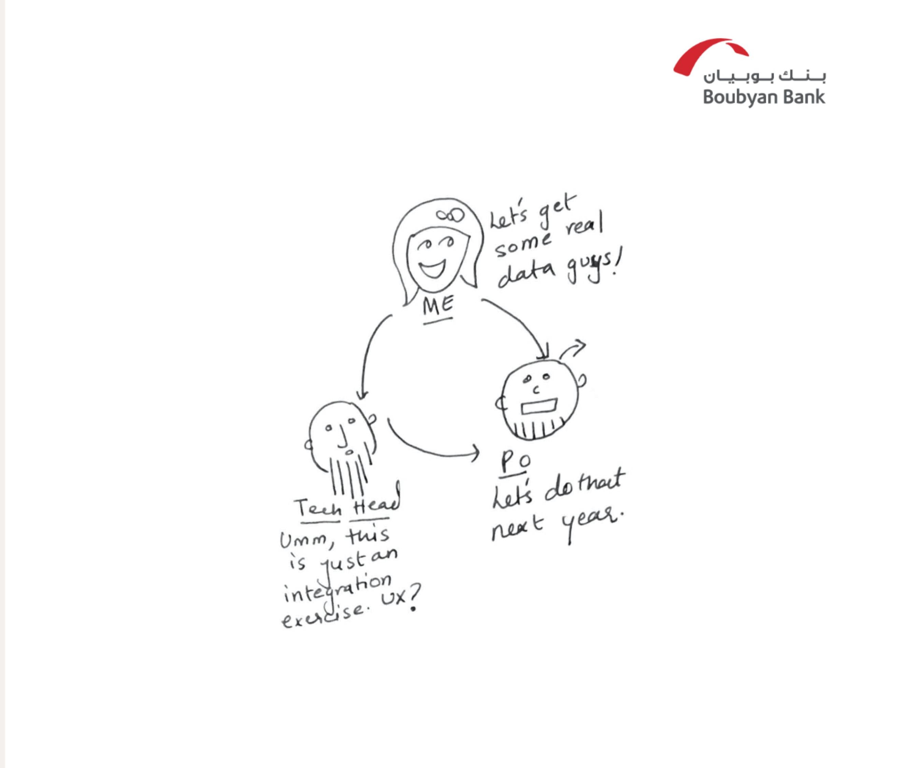
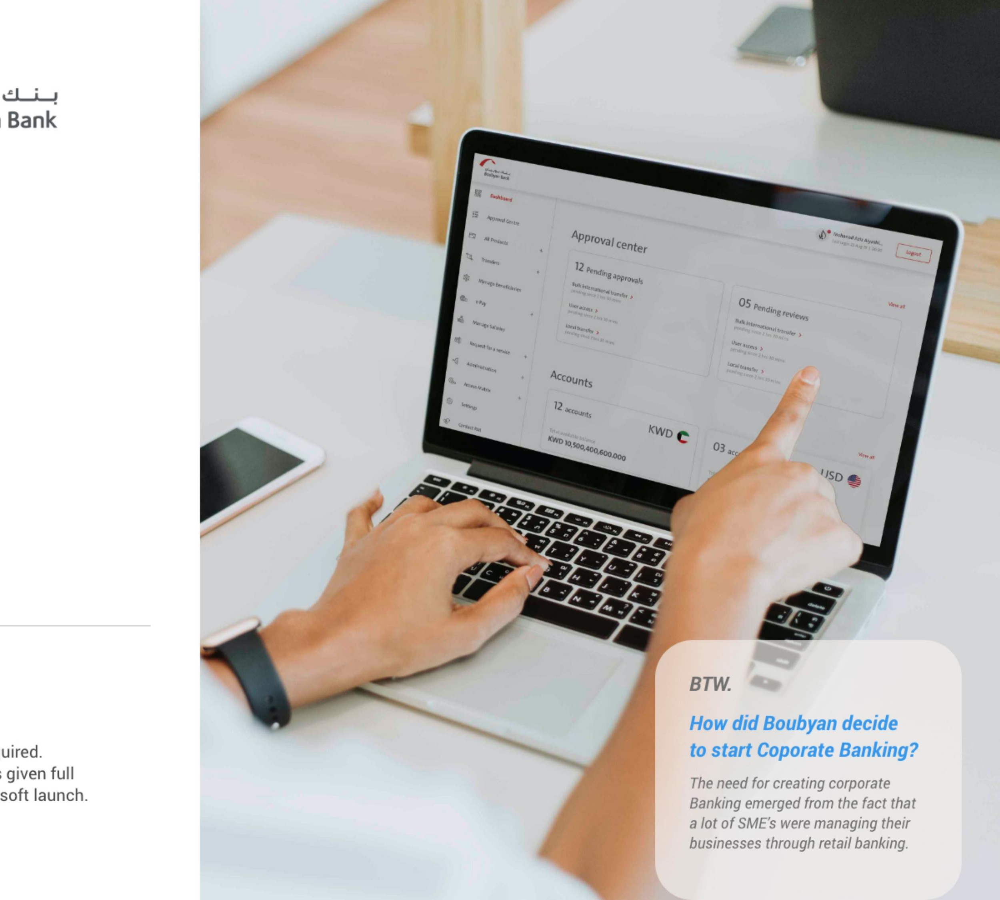
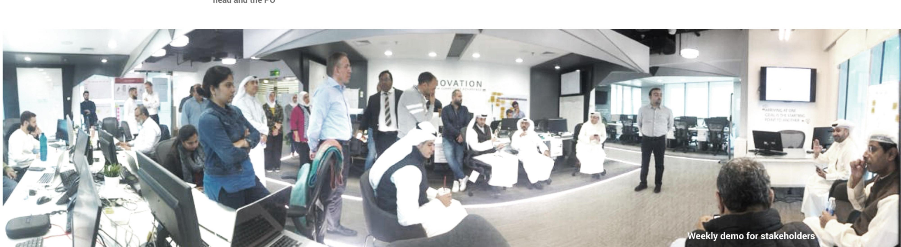
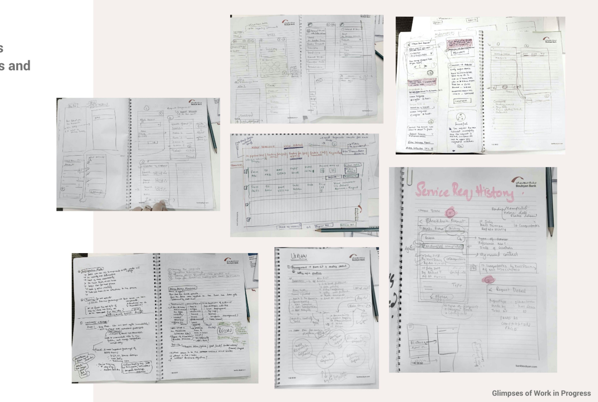
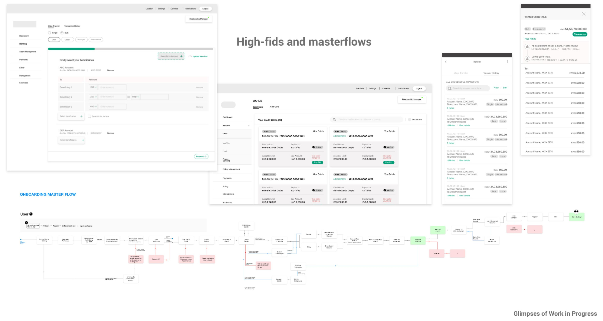
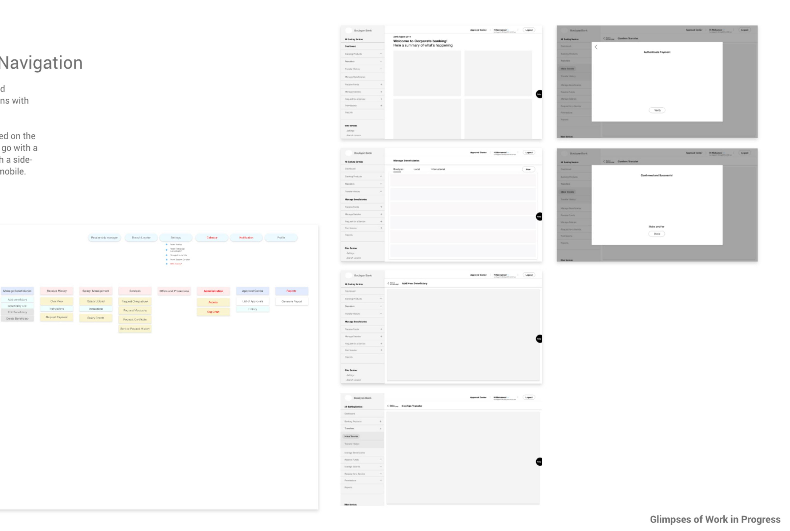

Designing corporate banking from scratch — as the only UX designer in the room

I spent 6 months at an Islamic bank in Kuwait advocating for user experience and design thinking. In parallel — as the only UX designer onboard — I was designing their entire Corporate Banking Portal from the ground up.
The Brief
- Re-design for scalability, with a focus on usability
- Guide the visual design team to execute the same
- Manage implementation alongside the development team

The Challenges
My introduction to the team just meant another hand to make things faster — not a seat at the table. A few things stacked up against us from day one.
We entered mid-way. Design decisions were already locked in by the time I joined. The challenge wasn't to start clean — it was to make a U-turn, begin again, and not make it feel like a tornado to everyone who'd already signed off on the old plan.
Nobody quite understood what UX was for. The whole ecosystem was biased toward tech and development. Getting a seat in requirement sessions meant proving, repeatedly, that design wasn't just "making it look nice after the fact."
There was no data, no BIU. No usage statistics existed to base decisions on. We'd have to start monitoring only after the soft launch — which meant a lot of early calls were made on informed assumption, not evidence.
Islamic banking added a layer most of us hadn't designed for. Compliance rules shaped what we could and couldn't simplify, and a lot of stakeholders were more comfortable thinking in Arabic-first, locally-rooted patterns than in "globally accepted" UX conventions.
"Currently, no one is using the portal. We need to tell them we're here."
My Approach
Empathise. Sensitise. Collaborate. Create.
The first move wasn't to design — it was to understand how much was already built and what process was being followed. I sat with the squad first: the developers needed reusable components, the PO needed better-looking screens, the backend integrations weren't ready, and the design sprint was already behind the development sprint. Everyone was moving, just not together.
That led to a hard conversation. We decided to re-look at the entire UI kit, redesign scalable components, and redo the previous sprints' work.
"What! You want to re-do all the UI components and make all the previous journeys again?" — the squad, on hearing the plan
"Yes." — me
It set us back initially — but it created a "delta" between design and development sprints that gave us real breathing room to plan ahead, instead of constantly playing catch-up.
From there, we focused on the smallest details: multiple rounds of stakeholder review before final delivery on every journey, and a defined process for fixing bugs with QA so sprint timelines didn't get derailed. Once the PO saw the benefit, research and testing started getting pushed into every requirement session going forward — not as an afterthought, but as part of planning.
The Strategy: Make It Like Water
The guiding principle: build something so scalable it could change without effort later.
- Identified every template already on the platform
- Converted every journey into a simple 3-step navigation
- Focused only on usability enhancement — no designing based on assumptions
- Desktop: simple, fixed primary menu
- Mobile: shifted from bottom navigation to a hamburger menu
The reasoning was practical: post-launch, once real usage data started coming in, this base needed to evolve without breaking everything underneath it. A simple structure meant the shift would feel gradual to users, not jarring.

From Sketch to Screen
Because most of this work was usability enhancement rather than net-new design, the routine stayed simple: read the story, gather requirements with the Tech Head and PO, sketch low-fi or high-fi depending on what the requirement needed, walk it through with the team for sign-off, then iterate with developers as the build came together.


Fixing the navigation required multiple rounds of discussion with internal stakeholders. We tested several structures based on the new sitemap before landing on a simple 3-step navigation with a side menu — for both desktop and mobile.

The Product

Desktop — for larger corporates: bulk transfers, salary uploads, and a dedicated approval center.
Mobile — primarily for SMEs: super-maker-checker flows, timely push notifications, and the ability to re-initiate failed transfers on the go.
The Result
"The time is always right to do what is right." — Martin Luther King Jr.
- Created a 2-week delta between the design sprint and the development sprint — giving the team real room to plan ahead instead of constantly catching up
- Delivered a fully scalable product, ready to adapt to new requirements as they came in
- Brought on a dedicated UX researcher for future research and testing
- Ran our very first user research and usability test session — for one of the core journeys on the retail app
What I Took Away
This project pulled out leadership instincts I didn't know I had. Leading a team through this — not just designing for it — forced me to internalize the fundamentals in a way that sticks, and to find ways to actually convey those ideas to people who didn't start out believing they needed them. It made me respect design's role in an organization's growth in a much more grounded way than any brief ever could.